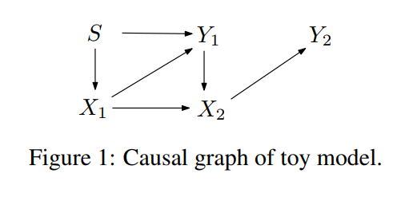

|
Yaowei Hu
Ph.D. Candidate 
CSCE, University of Arkansas, USA Email: yaoweihu@uark.edu 
|
I am a second-year Ph.D candidate in the Department of CSCE at University of Arkansas, advised by Prof. Lu Zhang.
Previously, I received a MSc and a BSc in computer science at Sichuan University, China.
My research areas include: causal inference, fairness-aware machine learning.

A Generative Adversarial Framework for Bounding Confounded Causal Effectss
Yaowei Hu, Yongkai Wu, Lu Zhang, Xintao Wu
AAAI, Virtual, 2021
Supplemental | Poster | Code | BibTex
Yaowei Hu, Yongkai Wu, Lu Zhang, Xintao Wu
AAAI, Virtual, 2021
Supplemental | Poster | Code | BibTex

Fair Multiple Decision Making Through Soft Interventions
Yaowei Hu, Yongkai Wu, Lu Zhang, Xintao Wu
NeurIPS, Virtual, 2020
Supplemental | Poster | Code | BibTex
Yaowei Hu, Yongkai Wu, Lu Zhang, Xintao Wu
NeurIPS, Virtual, 2020
Supplemental | Poster | Code | BibTex